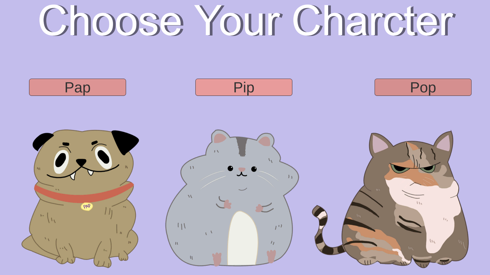
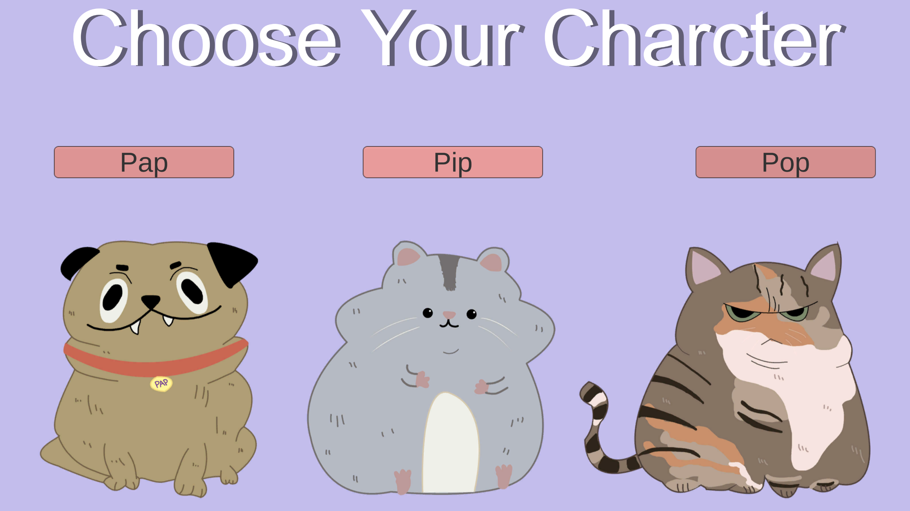

Character Art
This page highlights various character-focused artwork — from pixel sprites and concept paintings to UI screens and portraits. Each piece explores personality, visual identity, and expression through design, color, and pose.

 
